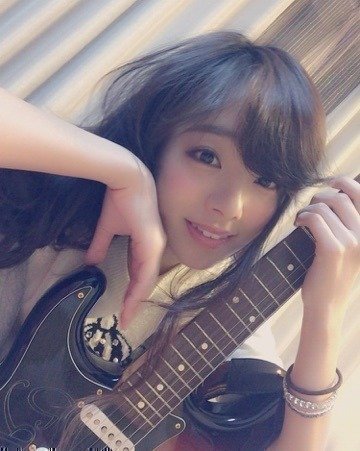
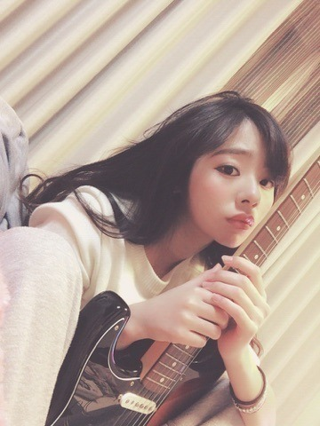
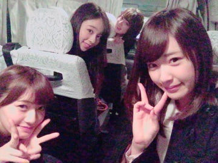

| 2015/12 11 Fri | 「未来予想図Ⅱ♡」 まひろ |
こんにちわ.＊
川村まひろです♡

昨日から私の連載している雑誌「YOUNG GUITAR」、発売中です♡
ということでギターくんとパシャリ．
私ん家のカーテンはベージュ，レースはブラウン&シルバー♡...

はい！ ということで，，，
皆さんっ(T ^ T)(T ^ T)ノ
本当にありがとうございます！
先日「THEカラオケ☆バトル」の出演後，本当に沢山の方からのメッセージを頂きました！
ありがとうございます！
OAの日はお仕事中だったのですが，調度私の出るタイミングに，休憩タイムになりました。
マネージャーさんがすぐにTVをつけてくださり，メンバー皆がTVの前にスタンバイしてくれました（ ; ; ）
私が歌っているのを皆は真剣に見てくれて，まあやとちーちゃんに関しては，涙を流してくれました...。
メンバー達が「まひろ最高、乃木の誇りだね、かっこよかったよ」等、沢山声をかけてくれました（ ; ; ）
みり愛が「友達から連絡きました！」
れなちが「親からスタンプ送られてきました～！」とか，，，メンバー以外にも，メンバーの家族さんも見てくれたんだ(T ^ T)...って、、
それに会うスタッフさんスタッフさんが，「ろってぃー！見たよ！カラオケバトル！」と声を掛けてくださります...
私は本当に嬉しいです．
それにびっくりしています．
正直，周りの方々がこんなに私に注目してくれると思っていませんでした．
改めて，『私って沢山の人に愛されてるんだな...（ ; ; ）』と思いました．
755のヤジコメなどを読んでいると，
メンバーの○○ちゃんから，「ろってぃーの歌う場がもっと増えてほしい。」等，そういったモバメが届いたよ！って言うのが幾つもあって、、 『みんなぁぁ～(T ^ T)ありがとう。。』って感じです！ 直接はまだ言えてないけど，「メンバーの皆，本当にありがとお！！！だいすきやぁ♡」
カラオケバトルの話がきたのは，アンダーLIVEの初日，本番直前でした.＊
周りの方には「まひろさん緊張してる様に見えないよ( ^ω^ )」と言われたんですけど，
当日なんて、もう、本当に、すっっっごい、すっごい、本当に本当に‼︎ 緊張してました♡笑
カラオケバトル見てくださった方，わかりましたか？？ ぁあ見えてですね，私，大分緊張していたんですよ。。笑
でも，ほんっっっとうに「THEカラオケ☆バトル」に出演できて良かったです！
スタッフの方々も本当に温かい人ばかりで，「また、リベンジにきてください！」とも言って頂きました♡♡♡
私も「リベンジさせてください！！」と言いました！
次回，カラオケバトルに出演できる時が来たら、緊張せず、120％の力を出したいです！
今回は悔しかったので，次は，決勝に残りたい！って思いました♪♪
沢山のファンの方が応援してくださり，祝福してくれて，私は本当に嬉しかったです！
本当にありがとうございます！！
皆さんのことが大好きです！♡
ぁ... 卒業宣言しちゃいましたが，あれは冗談なのでご安心を。。(#^.^#)
でも，ソロデビューを期待してくださっている方も沢山いるので，卒業したくない反面，いつかは卒業してソロデビューという夢を果たさなきゃ．という気持ちですね♡ぇへへ
とにかく何だか伝えるべきことが沢山あるんですけど，ごめんなさい，私上手く伝えるのが下手で...(^_-)ぇへへ
とにかく、皆本当にありがとう♡♡♡！

↑昨日，乃木坂浪漫のイベント終わりに待機中の車の中で撮りました！ かな，私，まーや，ずー♡
いや～，にしても想像以上に楽しかったですね．.笑 ファンの皆さんが静かに聞いている中，私達が真剣に本を読む．っていうね(^_-)ノ
その緊張した空気が逆に楽しくなっちゃって、、、( ^ω^ )ぇへへ
集まってくれた皆ありがとうございます.＊
ヤングギター，今月号のお写真です！
是非、チェックの方よろしくお願いします！！
動画も配信中です♪♪

ではでは、長い事失礼しました！
最後までありがとう♡！
また更新します、
川村まひろでしたノ
コメント(608)
2015/12/11 22:06